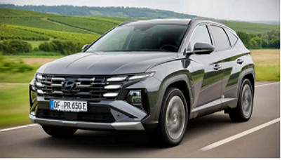
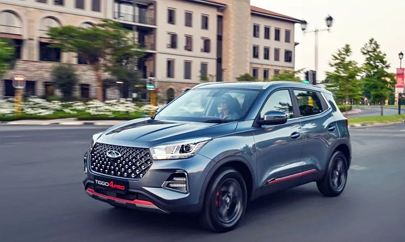
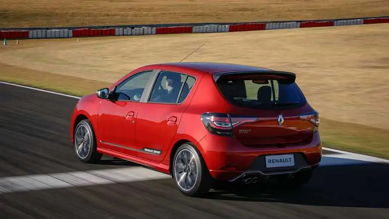

OS MELHORES CARROS PARA A FAMILIA.
Hyundai Tucson

É uma referência para famílias que valorizam espaço e versatilidade no dia a dia.
Seu motor turbo de 177 cavalos se destaca entre outros carros grandes da marca.
porta-malas pode chegar a incríveis 2.118 litros com os bancos rebatidos,
airbags, piloto automático e partida com botão
garantem segurança e praticidade para toda a família.
Chery Tiggo
Se você precisa de um SUV espaçoso para até sete pessoas,
o Chery Tiggo é uma excelente escolha.
Além do amplo espaço interno, ele oferece conforto, segurança e uma potência impressionante
com seu motor 1.6,
que entrega até 187 cv. Recursos como painel multimídia, e freio de estacionamento eletrônico
tornam a experiência ainda mais completa.

Chevrolet Spin

ideal para famílias com mais de dois filhos.
Com um generoso porta-malas e sete lugares confortáveis.
Recursos como sensor de estacionamento, lanterna de neblina, sensor de chuva e faróis com acendimento automático
garantem segurança e praticidade.
Renault Sandero
O Renault Sandero oferece ótimo espaço interno e o maior porta-malas da categoria.
Se você faz passeios principalmente na cidade, sua economia de combustível (até 9,5 km/litro na cidade com motor 1.0)
pode ser uma vantagem.

para voltar a primeira pagina, clique aqui
Para a pagina anterior clique aqui